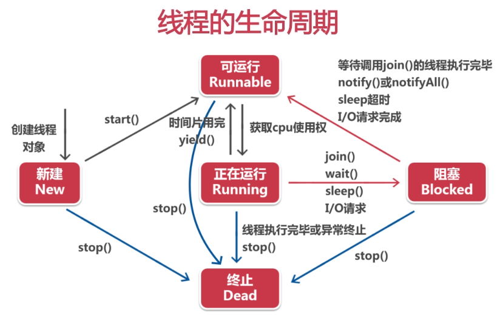

# 线程
线城是在多线程语言中很重要的概念，Java是一门多线程语言。
# 1、创建线程
Thread 是一个线程类，java.lang 语言包下。
class MyThread extends Thread {
public void run () {
System.out.println(getName() + "running!");
}
}
public class ThreadTest {
public static void main(String[] agrs) {
System.out.println("主线程0");
MyThread mt = new MyThread();
mt.start();
System.out.println("主线程1");
}
}
我们发现，这个打印的顺序是，没有按照我们编写的程序逻辑执行的。
主线程0
主线程1
Thread-0running!
使用接口创建线程：
class PrintRunnable implements Runnable{
@Override
public void run() {
System.out.println("running!");
}
}
public class ThreadTest {
public static void main(String[] agrs) {
PrintRunnable pr = new PrintRunnable();
Thread mt = new Thread(pr, "线程1");
mt.start();
}
}
# 2、生命周期

# 3、sleep 方法
sleep 方法，在指定的毫秒数内让正在执行的线程休眠（暂停执行），单位毫秒，是 Tread 类的方法。
这个程序的作用是，每循环一次，等待 500ms。
class PrintRunnable implements Runnable{
@Override
public void run() {
for(int i = 0; i < 30; i++) {
System.out.println(i);
try {
Thread.sleep(500);
} catch (InterruptedException e) {
e.printStackTrace();
}
}
}
}
# 4、join 方法
join 方法，等待该方法的线程结束后执行，抢先执行该线程。
是 Tread 类的方法。
public final void join()
使用
class MyThread extends Thread {
public void run () {
System.out.println(getName() + "running!");
}
}
public class ThreadTest {
public static void main(String[] agrs) {
System.out.println("主线程0");
MyThread mt = new MyThread();
mt.start();
try {
mt.join();
} catch (InterruptedException e) {
// TODO 自动生成的 catch 块
e.printStackTrace();
}
System.out.println("主线程0结束");
}
}
打印结果：
主线程0
Thread-0running!
主线程0结束
# 5、线程优先级
线程优先级分为 10个等级，数值越大优先级越高。
获取当线程的优先级：
Thread.currentThread().getPriority();
主函数默认优先级为 5。
# 6、线程同步
当两个线程同时修改一个对象时，可能会出错，举个例子，当一个账户余额为 200 元，同时有两个请求，取200元操作，这两个操作是，相当于两个线程。
当一个线程访问到200元，还没来得及修改金额时，第二个线程也访问了200元的月，并且求改了金额。最后两个人都取了200元，但是账户余额减少了 200元。
为了解决这个问题，当一个线程造作的时候，防止其他线程操作同一个对象，我们可以用线程锁。
# 7、线程间通信
wait：等待当前线程
notify：恢复等待的一个线程
notifyall：恢复等待的一个线程